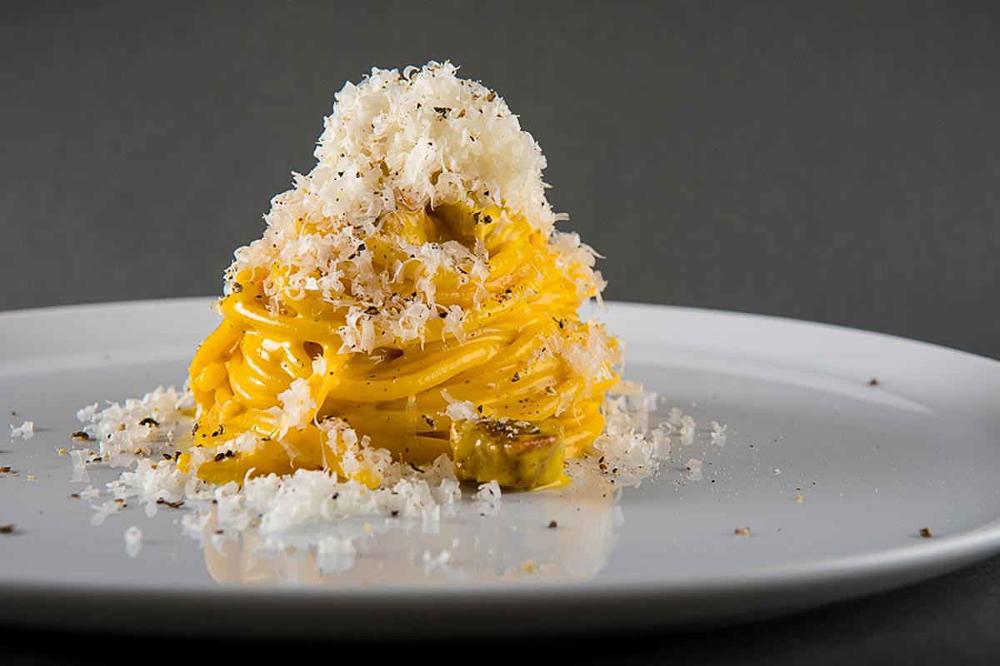

Carbonara!

Ingredienti:
- 4 Egg Yolks
- 200g Guanciale or Pancetta
- 30g Grana Padano or Parmessan Romano
- 20g Pecorino Romano
- Pepper to taste
Method:
- Pepper eggs, add cheese to eggs and whisk eggs together until everything is mixed
- Cook guanciale or pancetta until done and crispy. Set aside meat and add oil to egg mixture and mix
- Cook pasta and add a ladle of finished cooking liquid to egg mixture and mix until combined
- Add pasta to egg mixture and finish cooking over bain-marie to 149 degrees
- Add room temperature guanciale or pancetta to pasta with a ladle of cooking liquid and cook until warm throughout
Back to Homepage